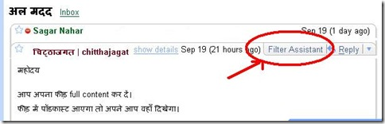

make your gmail more better
Hindi Blog Aggregator (original image)
जीतू भाई के जीमेल पर लिखे लेख को आप सब ने पढ़ा होगा, जीमेल में क्या क्या सुविधायें है; उन सुविधाओं कि अच्छी जानकारी यह लेख देता है। अब चुंकि जीमेल से हम अच्छी तरह से परिचित है। अब उसके बारे में कुछ ना कहते हुए सीधे सीधे विषय पर आते हैं।
फॉयर फॉक्स में एक छोटा सा (212Kb का) प्लग इन इन्स्टाल करने से जीमेल में अपने आप कई सुविधायें जुड़ जायेंगी। आईये फोटॊ देखते हैं
नीचे दिये फोटो को ध्यान से देखिये तीन अलग अलग तरह के अटेचमेन्ट अपने फोरमेट में दिख रहे हैं। पहली मेल में अटेचमेन्ट में वर्ड फाईल है, दूसरे में जेपीजी और तीसरे में म्युजिक की (Mp3)।
जब हम माऊस का तीर को इन अटेचमेन्ट के पास ले कर जाते हैं तो फाइल का नाम और बाकी की जानकारी दिखने लगती है।

अब देखिये इस दूसरे फोटो को मेल में क्या लिखा है सब कुछ मेल को खोले बिना ही दिख रहा है। बस मेल पर राईट क्लिक कीजिये, आपको पता चल जायेगा कि यह मेल पढ़ने लायक है या नहीं, अगर नहीं तो trash पर क्लिक कर इस मेल को कचरे के डिब्बे में डाल सकते हैं।

आईये अब इस तीसरे फोटो को देखिये| आपको जो मेल मिलती है, उसे आप अलग अलग फिल्टर बना कर रख सकते हैं। इस बारे में जीतू भाई अपने लेख में कहते हैं
फिल्टर (छंटाई)
अब आपके पास इमेल तो अलग अलग जगह से आ गयी, लेकिन आप चाहते है कि जीतू के यहाँ से आई इमेल एक जगह संचित हो जाए, इमेल बॉक्स को ना घेरे। तो उसका भी इलाज है। आप किसी भी आने वाले पते, विषय, पाने वाले पते अथवा सामग्री के आधार पर फिल्टर बनाकर, उस इमेल को वांछित जगह पर पहुँचा सकते है। पूरी जानकारी यहाँ दी गयी है।

और भी बहुत सी सुविधाय़ें है जो फिलहाल मुझे पता नहीं चली है, आप को पता चले तो टिप्प्णी के रूप में बता सकते हैं।

अपने जीमेल में यह सुविधा कैसे जोड़ें।
सबसे पहले इस पेज को फोयर फॉक्स में खोलें और नीचे लिखे install Now पर क्लिक करें। जिससे एक खिड़की खुलेगी और आपको इन्स्टाल के लिये पूछा जायेगा आप इन्स्टाल कर लें और फॉयरफॉक्स को रिस्टार्ट कर लेवें।
अगर आप IE या अन्य किसी ब्राऊजर में इस पोस्ट को पढ़ रहे हैं तो नीचे लिखे install Now पर राईट क्लिक कर save link as पर क्लिक कर डेस्क टॉप पर सेव कर लेवें। यह winzip फाईल जैसी दिखेगी।
अब फॉयर फोक्स खोलें और उसे थोड़ा छोटा कर डेस्क टॉप पर दिख रही विनज़िप फाइल को खींच कर फॉयर फॉक्स ब्राऊजर की खिड़की में ला कर छोड़ देवें, इन्स्टाल शुरु होगा या फिर File- Open File- desk top- better_gmail__45_1.0__45_fx__43_sm पर क्लिक कर लें। इन्स्टाल शुरु हो चुका है, इन्स्टाल होने के बाद ब्राऊजर को रिस्टार्ट के लिये पूछा जायेगा, आप रिस्टार्ट कर लें।
रिस्टार्ट होने के बाद अब आप अपना जीमेल खाता खोलें और देख लीजिये ये सुविधायें आपके जीमेल में जुड़ चुकी है।
Technorati Tag: make your gmail more better , gmail , जीमेल , अपने जीमेल को बेहतर बनायें
चिट्ठाजगत Tag: make your gmail more better, gmail, जीमेल, अपने जीमेल को बेहतर बनायें Learn-Hindi, Hindi-Blogging, Hindi, Hindi-Blog, हिन्दी-खोज, हिन्दी-ब्लॉग, हिन्दी-चिट्ठाकारिता, सफल-हिन्दी-चिट्ठाकारिता, प्रसिद्ध-चिट्ठे, प्रसिद्ध-हिन्दी-चिट्ठे, चिट्ठा-प्रचार, चिट्ठा-प्रसार, जाल-प्रचार, जाल-सफलता